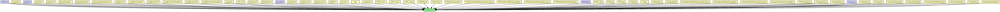
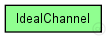

This documentation is released under the Creative Commons license
This documentation is released under the Creative Commons license(no description)
The following diagram shows usage relationships between types. Unresolved types are missing from the diagram.
The following diagram shows inheritance relationships for this type. Unresolved types are missing from the diagram.
If a module type shows up more than once, that means it has been defined in more than one NED file.
| BurstHost (compound module) |
Definition of an IP node with a transport generator that connects to IP directly, without TCP or UDP. |
| EtherHost (compound module) |
An example host with one Ethernet port and traffic generators that generate Ethernet traffic directly. This host model does not contain higher layer protocols (IP, TCP). |
| EtherHost2 (compound module) |
Example host model with one Ethernet port and several traffic generators to create traffic in the test network. |
| EthernetInterface (compound module) |
Ethernet network interface. Complements EtherMAC and EtherEncap with an output queue for QoS and RED support. |
| EthernetInterface2 (compound module) |
Ethernet network interface which supports full-duplex operation only. Complements EtherMAC2 and EtherEncap with an output queue for QoS and RED support. |
| EthernetInterfaceNoQueue (compound module) |
Ethernet network interface. Assumes inifinite queue. |
| Ieee80211Nic (compound module) |
This NIC implements an 802.11 network interface card. It can be configured via the mgmtType parameter to act as an AP or a STA, or for ad-hoc mode. |
| Ieee80211NicAdhoc (compound module) |
This NIC implements an 802.11 network interface card in ad-hoc mode. |
| Ieee80211NicAP (compound module) |
This NIC implements an 802.11 network interface card, in an AP, using infrastructure mode. |
| Ieee80211NicAPSimplified (compound module) |
This NIC implements an infrastructure mode 802.11 network interface card for a wireless Access Point (AP), but using a simplified mgmt module that does not support handovers. |
| Ieee80211NicSTA (compound module) |
This NIC implements an 802.11 network interface card, in a STA, using infrastructure mode. |
| Ieee80211NicSTASimplified (compound module) |
This NIC implements an infrastructure mode 802.11 network interface card for a host (STA), but using a simplified mgmt module that does not support handovers. |
| LargeLAN (compound module) |
Several hosts and an Ethernet hub on a switch. One port of the hub connect to a 10Base2 segment. |
| LDP_LSR (compound module) |
An LDP-capable router. |
| MediumLAN (compound module) |
Several hosts and an Ethernet hub on a switch |
| MFMobileHost (compound module) |
Models a mobile host with a wireless (802.11b) card in ad-hoc mode. This model contains the Mobility Framework's 802.11 implementation, Nic80211, and IP, TCP and UDP protocols. The mobility model can be dynamically specified with the mobilityType parameter. |
| MobileHost (compound module) |
Models a mobile host with a wireless (802.11b) card in ad-hoc mode. This model contains the new IEEE 802.11 implementation, Ieee80211Nic, and IP, TCP and UDP protocols. The mobility model can be dynamically specified with the mobilityType parameter. |
| NetworkLayer (compound module) |
Network layer of an IP node. |
| NetworkLayer6 (compound module) |
Represents an IPv6 network layer (L3). |
| Nic80211 (compound module) |
This NIC implements an 802.11 network interface card. |
| NicCsma (compound module) |
The CsmaNic contains a csma-like MAC layer. The SnrEval module is used as the mac needs a RadioState to be published. However as still the BasicDecider is used all messages will be delivered to the MAC and no packets get lost |
| Nop (compound module) |
Just lets messages through without any change or delay. |
| OneNetArea (compound module) | (no description) |
| OSPF_Area1 (compound module) | (no description) |
| OSPF_Area2 (compound module) | (no description) |
| OSPF_Area3 (compound module) | (no description) |
| OSPFRouter (compound module) |
An OSPFv2 router. |
| PPPInterface (compound module) |
PPP interface. Complements the PPP module with an output queue for QoS and RED support. |
| PPPInterfaceNoQueue (compound module) |
PPP interface. Assumes inifinite queue. |
| PPPInterfaceWithDLDuplicatesGenerator (compound module) |
PPP interface. Complements the PPP module with an output queue for QoS and RED support. |
| PPPInterfaceWithDLThruputMeter (compound module) |
PPP interface. Complements the PPP module with an output queue for QoS and RED support. |
| PPPInterfaceWithULDropsGenerator (compound module) |
PPP interface. Complements the PPP module with an output queue for QoS and RED support. |
| PPPInterfaceWithULThruputMeter (compound module) |
PPP interface. Complements the PPP module with an output queue for QoS and RED support. |
| RSVP_LSR (compound module) |
An RSVP-TE capable router. |
| RTPHost (compound module) | (no description) |
| RTPLayer (compound module) | (no description) |
| SmallLAN (compound module) |
Several hosts on an Ethernet hub |
| SnrNic (compound module) |
This is the easiest nic to implement "real" network behaviour. It uses the CsmaMacLayer and the SnrDecider and SnrEval modules. |
| StandardHost (compound module) | |
| StandardHost6 (compound module) | |
| StandardHostWithDLDuplicatesGenerator (compound module) |
IP host with SCTP, TCP, UDP layers and applications AND PPPInterfaceWithDLDuplicatesGenerator. |
| StandardHostWithDLThruputMeter (compound module) |
IP host with SCTP, TCP, UDP layers and applications AND PPPInterfaceWithDLThruputMeter. |
| StandardHostWithULDropsGenerator (compound module) |
IP host with SCTP, TCP, UDP layers and applications AND PPPInterfaceWithULDropsGenerator. |
| StandardHostWithULThruputMeter (compound module) |
IP host with SCTP, TCP, UDP layers and applications AND PPPInterfaceWithULThruputMeter. |
| TCPSpoofingHost (compound module) |
IP host with TCPSpoof in the application layer. |
| ThroughputClient (compound module) | (no description) |
| ThroughputClient (compound module) | (no description) |
| ThroughputServer (compound module) | (no description) |
| TwoNetsArea (compound module) | (no description) |
| WirelessAP (compound module) |
Models a 802.11 Access Point. It can be used in conjunction with WirelessHost, or any other host model containing WirelessNicSTA. |
| WirelessAPSimplified (compound module) |
Models a 802.11 Access Point, but using a simplified NIC that does not support handovers. It should be used in conjunction with WirelessHostSimplified, or any other host model containing WirelessNicSTASimplified. |
| WirelessAPWithEth (compound module) |
Models a 802.11 Access Point with Ethernet ports. It can be used in conjunction with WirelessHost, or any other host model containing WirelessNicSTA. |
| WirelessAPWithEthSimplified (compound module) |
Models a 802.11 Access Point with Ethernet ports, but using a simplified NIC that does not support handovers. It can be used in conjunction with WirelessHostSimplified, or any other host model containing WirelessNicSTASimplified. |
| WirelessAPWithSink (compound module) |
Well, it Models a 802.11 Access Point with a Sink. |
| WirelessHost (compound module) |
Models a host with one wireless (802.11b) card in infrastructure mode. This module is basically a StandardHost with an Ieee80211NicSTA added. It should be used in conjunction with WirelessAP, or any other AP model which contains Ieee80211NicAP. |
| WirelessHostSimplified (compound module) |
Models a host with one wireless (802.11b) card in infrastructure mode, but using a simplified NIC that does not support handovers. This module is basically a StandardHost with an Ieee80211NicSTASimplified added. It should be used in conjunction with WirelessAPSimplified, or any other AP model which contains Ieee80211NicAPSimplified. |
| ARPTest (network) | (no description) |
| ARPTest (network) | (no description) |
| BusLAN (network) |
Sample Ethernet LAN: four hosts on a bus. |
| MixedLAN (network) |
Sample Ethernet LAN containing eight hosts, a switch and a bus. |
| REDTestTh (network) | (no description) |
| Traceroute (network) | (no description) |
| Name | Value | Description |
|---|---|---|
| class | cIdealChannel |
channel IdealChannel { @class(cIdealChannel); }
This documentation is released under the Creative Commons license